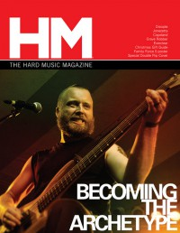

Becoming The Archetype
|  |
| November 2008 HM |
Media coverage:
- Sum 2005 in Uprise Zine "New Artist Spotlight: Becoming The Archetype"
- Jul 2005 in HM "Becoming The Archetype", by Bradley Spitzer
- Aug 2005 in Heaven's Metal "Metal Tracks: Becoming The Archetype", by Daniel Jesse
- May 2007 in HM "The Physics of Metal", by David Stagg
- May 2007 in HM "Poster: Becoming The Archetype"
- Jun 2008 in Heaven's Metal "Paying Homage to the Christian Metal of the Past", by Lloyd Harp
- Nov 2008 in HM "The Power of Tension", by Andrew Schwab
- Apr 2011 in HM "Becoming The Archetype", by Daniel Garcia
- Dec 2011 in HM "Hardnews: Quick & Concise: Becoming The Archetype Change Its Architecture"
- Sep 2012 in HM "Poster: Becoming The Archetype (Chris McCane)"
- Sep 2012 in HM "In today's metal scene there are few things more exciting", by Jeff Cunningham
Albums & reviews:
2005: Terminate Damnation
- Nov 2005 in HM, by David Stagg
- Jun 2007 in CCM, by Doug Van Pelt
- Jul 2007 in HM, by Jonathan Swank
- Sum 2007 in Uprise Zine, by Sir Jorge
- Dec 2008 in Heaven's Metal, by Jonathan Swank
- Jan 2009 in HM, by David Stagg
- Jan 2009 in Relevant
- Apr 2011 in HM, by Jonathan Swank
- Jul 2011 in Heaven's Metal, by Jeff McCormack
- Oct 2012 in HM, by David Stagg
- Dec 2012 in CCM Digital, by Matt Conner

© 2011 CMnexus. Last updated September 2019. Contact: editor -AT- cmnexus -DØT- org About